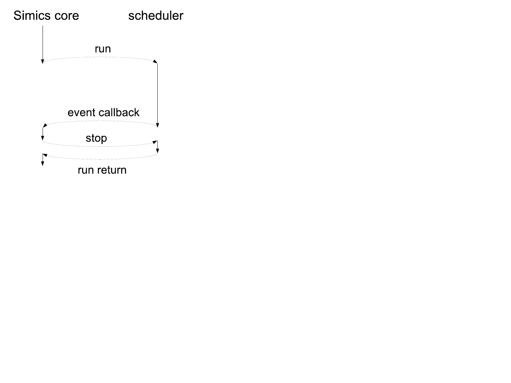

Processor Model Integration Guide
This document describes the API used to implement models of processors in Simics.
Simics handles the simulation framework, including the user interfaces, standardized APIs, plug-in administration, and commonly used utilities and resources.
The processor models use and implement the standardized APIs, which allows mixing simulation models and creating a uniform interface to the user.
The processor API is the part of the API that gives a model to get control over simulator scheduling.
It includes processor specific interfaces to enable standard functions and commands for the processor models as well as efficient memory interfaces to allow fast simulation.
The most important interfaces are covered in this document, for the other interfaces please refer to the API Reference Manual.
Depending on use, the processors should implement and use different parts of the interfaces described.
A number of areas that a processor model may support can be identified as follows:
- Simulation scheduling
- There must be basic support for advancing the simulation.
This support must be present for any fast functional processor model.
Cycle driven models may be designed using the built-in clock class that handles the scheduling interaction with the framework.
- Direct Access to Memory
- Interfaces used to cache pointers to memory, allowing accesses to be carried out without involving the API.
- Inspection and control of processor models
- As processors are very visible to the user of the simulator, there are several standardized ways for the user to access and control a processor.
To support these, the processor models in turn have to implement interfaces and trigger haps.
- Breakpoints
- The processor model is fully responsible for triggering virtual address breakpoints.
For physical address breakpoints, the processor model needs to check if ranges mapped with direct memory access contain breakpoints and then either request more fine grained regions of memory without breakpoints or fall back to explicit memory operations, where the explicit memory operations will handle breakpoints if they happen to match.
- Simulation of models
- Covers the mechanisms used to communicate between processors and devices.
Like any other model, processor models should be written to integrate well into the Simics environment.
See the Simics Model Development Checklist section for a good checklist to follow when designing and implementing the model.
See also the Simics User’s Guide for more information about the features discussed in this document.
How to configure a system and create start scripts is described in System Configurations in Model Builder User’s Guide.
Example system configurations can be found in [simics]/targets/cosim/.
This chapter describes how to interface processors to Simics depending on the requirements on the simulation.
A processor model defines one or more classes to integrate with the Simics environment.
Simics classes have attributes and implement interfaces.
Even though Simics classes can be written in DML, C, C++, or Python, only C and C++ is currently supported for writing processor models.
See the Configuration and Checkpointing chapter in the Simics User’s Guide for more information about classes in Simics and how to instantiate them into Simics objects.
A key issue for fast simulation is how it is scheduled.
A scheduler is an object that implements the execute interface.
Such an object advances virtual time for itself and for the objects associated with it.
A processor that also is a scheduler can thus simulate a sequence of instructions that occur at different points in virtual time without having to return back to the framework.
Processors can be scheduled in any of the following ways:
- Processors without custom scheduling
- Processors models do not have any customized scheduling, but rather use event callbacks to perform simulation.
This setup is suitable for clock cycle driven simulation as it performs simulation in strict virtual time order.
See figure 1.
- Scheduling a set of processors
- The processors are scheduled together, and a single object implements the
execute and cycle interfaces used by the framework to schedule the set of processors.
See figure 2.
This type of scheduling allows the simulation to run faster since it requires less synchronization and fewer context switches.
The drawback is that both the cycle interface and the optional step interface are hard to implement.
- Scheduling each processor
- The
execute and cycle interfaces are here implemented in each thread/core objects instead of in a central scheduler object.
See figure 3.
This is the model used by all standard Simics processors models.
The multiple clocks in this type of setup are kept by Simics within a defined window of virtual time.
As the clocks are driven individually, this leads to temporal decoupling between the processors.
The documentation for the execute interface describes how the Simics core controls the simulation.
Cycle driven models are typically slow because all objects run in lock-step mode, advancing one cycle at a time.
The setup has a single clock object that handles timing for all objects.
Figure 1 shows an example setup of event driven processors.
This type of setup is suitable for clock-cycle-accurate HDL simulator models.

Figure 1. Event driven processors in Simics.
The objects in figure 1 are:
- Simics core
- The Simics core providing simulation services through the Simics API.
- clock
- The Simics clock object implementing the
execute interface and the cycle interface.
The clock handles all timing in the system.
- thread/core
- The thread/core objects are placeholders for each simulated thread/core.
They implement standard processor interfaces such as the
processor_info_v2, int_register, and exception interfaces.
These interfaces are used by standard Simics commands for showing time, events, register contents, instruction disassemble, etc.
- memory-space
- Generic Simics memory-space objects handling memory accesses.
- device
- Device models for the system.
In the setup shown in figure 2, the processors export one implementation of the time event queue instead of having a Simics object do that.
The result is that the processor model has better control of when new events are added, and the processor model itself triggers the events.
The Simics core instructs the scheduler to run the simulation forward through the execute interface.
All objects in a cell implementing the execute interface will be kept within a time window defined by the time_quantum attribute of the cell.
Having a quantum that is significantly larger than a single cycle (as in a cycle driven model) allows for faster simulation since optimizations such as binary translation and hypersimulation can then be employed.

Figure 2. Scheduling a set of processors.
The objects in figure 2 are:
- Simics core
- The Simics core providing simulation services through the Simics API.
- scheduler
- Implements the
execute and cycle interfaces.
Simics core and devices will use this object for posting events and for driving the simulation.
The scheduler object may correspond to something particular in hardware, such as a processor with multiple cores.
- thread/core
- The thread/core objects are placeholders for each simulated thread/core.
They implement standard processor interfaces for example the
processor_info_v2 interface.
These interfaces are used by standard Simics commands for showing time, events, register contents, instruction disassemble, etc.
- memory-space
- Generic Simics memory-space objects handling memory accesses.
- device
- Device models for the system.
The processor model has control of time and can optimize for running long quanta.
The Simics core notifies the execute object that it can start to execute and it is up to the implementation to control how everything is scheduled.
The threads/cores may be simulated in parallel with multiple threads.
Note that care must be taken if for example deterministic execution should be supported.
An example system with this setup can be found in [simics]/targets/cosim/queues-in-cosimulator.simics.
The source code for the example can be found in [simics]/src/extensions/sample-risc.
In the setup shown in figure 3, each processor implements the scheduling interfaces.
This is a special case of the previous mechanism where each set of processors only include a single processor.
The Simics core instructs the scheduler to run the simulation forward through the execute interface.
All objects in a cell implementing the execute interface will be kept within a time window defined by the time_quantum attribute of the cell.
Having a quantum that is significantly larger than a single cycle (as in a cycle driven model) allows for faster simulation since optimizations such as binary translation and hypersimulation can then be employed.

Figure 3. Scheduling Each Processor.
The objects in figure 3 are:
- Simics core
- The Simics core providing simulation services through the Simics API.
- thread/core
- The thread/core objects implement both the execution related interfaces (
execute and cycle), and the interfaces used to control and inspect the individual cores (processor_info_v2, step, int_register, etc).
- memory-space
- Generic Simics memory-space objects handling memory accesses.
- device
- Device models for the system.
This model is similar to the previous model with the difference that each thread/core defines its own time domain.
This also means that each object will be driven individually by the Simics core.
This is the type of model used by all standard processor models in Simics.
This chapter lists the interfaces used for customized simulation scheduling.
See execute for the documentation of the interface.
In figure 4 there is an example call-graph of Simics core and processor scheduler communication.
Simics posts events on the processor’s event queues to be triggered, for instance, at the end of the allowed time window.
Simics then calls the run function in the execute interface and the processor starts executing instructions.
The processor which implements the event queues will after a while execute an event callback for the event posted by the Simics core in one of the event queues.
The Simics core handles the event which will trigger a stop request via the stop function.
Note that not all events will trigger a stop request.
Having received stop, the processor model must stop the simulation as soon as possible and return to the Simics core.
This is typically done as soon as the currently executing instruction is committed.

Figure 4. An example of Simics core and scheduler communication.
The processor API includes support for caching pointers to simulated memory so that the model can perform accesses directly instead of having to use the API for every individual access.
This chapter lists the interfaces used to setup and handle direct access to memory.
The direct_memory_lookup and direct_memory interfaces replace the memory_page interface of Simics 4.8.
The processor state can be controlled and inspected using commands or GUI controls.
This chapter describes the interfaces, haps, and breakpoint functionality required for supporting this.
Several generic Simics commands work automatically when standard interfaces are implemented. How the interfaces map onto objects depends on how the model is designed, for example the type of models described in Chapter 1.
This section lists the interfaces that can be implemented by the processor model to enable certain Simics features.
They are not required, but implementing them will allow user defined processor models to support the same generic feature set as Simics standard processor models.
If you intend to plug your model into an existing Simics-provided platform, then many of these interfaces are actually required for such a platform to function.
A hap is an event or occurrence in Simics with some specific semantic meaning, either related to the target or to the internals of the simulator.
Haps can for instance be used by the cosimulator to trigger events on control register reads or writes.
The cosimulator calls one of the SIM_c_hap_occurred... functions to trigger a hap.
The Simics User’s Guide document describes how to get a callback when a hap is triggered.
To be fully compatible with regular Simics CPU models, a cosimulator should trigger the following haps:
Details about the haps can be found in the Simics Reference Manual, or online with the list-haps command.
The sample-risc module in [simics]/src/extensions/sample-risc/ contains example code how to raise Core_Control_Register_Read and Core_Control_Register_Write haps.
The cosimulator should not trigger the following haps as they are triggered by the Simics core:
Breakpoints in Simics are set on physical, linear, or virtual address for read, write, or execute accesses.
Linear address breakpoints are usually only supported by x86 processors.
Figure 5 shows how to carry out a memory access to support breakpoints.
Figure 5. Memory access path with breakpoint support and direct access to memory.
Simics keeps an updated list of virtual breakpoints for a given virtual context in a context object.
A processor object must make sure that all accesses are checked against the list and trigger a breakpoint when there is a hit.
The processor object may cache the list internally for efficiency.
A processor that does not optimize the breakpoint checking internally can request that the context checks and triggers breakpoints.
It does that by calling the trigger_breakpoint function in the breakpoint_trigger interface with the handle set to BREAKPOINT_HANDLE_ANY.
There are two ways that the list of virtual address breakpoints can change and the processor must then refresh or invalidate its breakpoint information cache:
- Breakpoints may be added to or removed from a context.
- The current active context may change to another context.
Breakpoint changes can be listened for either using the Core_Breakpoint_Change hap, or by registering callbacks through the breakpoint_change interface.
The active context is changed through the set_context function in the context_handler interface.
The direct_memory_lookup interface will return information flagging if breakpoints or tracers are present on a returned lookup.
If breakpoints or tracers are flagged and overlap with the access type the direct memory user wants to perform, then the access should be performed using the memory_space interface.
When accessing memory through the memory_space interface, physical address breakpoints will be handled by the memory-space and do not need to be handled in the cosimulator.
Unlike for virtual breakpoints, the cosimulator does not need to listen for new or changed physical breakpoints.
Any change to a physical breakpoint on a requested page will result in the page being invalidated through the direct_memory_update interface.
The interfaces directly related to implementing breakpoint support are:
How a processor model fits into the Simics environment is the topic of this Chapter.
- Simics API
- Although the processor model does not directly expose any part of the Simics API, many API calls make use of the interfaces described in this document.
- Command Line Interface
- Some commands are bound to interfaces, and a processor model that implements a set of interfaces therefore automatically gets a set of commands defined.
See Section 4.1 for more information about such commands.
The processor model can implement additional commands beyond the pre-defined commands.
- Debug Functionality
- Low-level debug functionality that can be supported by a processor model is breakpoints (see Chapter 5) and the
context_handler interface.
The context_handler interface is used by a context switcher object to change target software context based on information from an operating system awareness module.
- Checkpointing
- Just like any other model, a processor model needs to properly save and restore all simulated state through attributes to support checkpointing.
- Snapshots (In-memory)
- In-memory snapshots have the same requirements as checkpoints written to disk.
- System Model Devices
- Device models interact with the processor model through interfaces and can be reused as is when using a new processor model.
Naturally, modifications need to be made if a different system is to be simulated.
Close interaction with the system model builder is typically needed when changing the CPU model.
For some system models, information about this is covered in the associated target guide.
- System Model Components
- Components are usually built to abstract away the low-level configuration of a model.
Components for a user defined processor model can usually be derived from a Simics-provided component with only minor changes needed to bridge low-level differences in attributes and configuration.
- Operating System Awareness
- The Simics environment provides support for application debugging and analysis through operating system awareness modules that define process tracker objects.
The operating system awareness models need to be modified to support new architectures, new revisions of operating systems, and also for completely new operating systems.
When using an existing operating system awareness module with a user defined processor model, the naming of registers in the
int_register interface needs to be consistent.
- Software Development Environment Awareness
- Software development environments such as WindRiver Workbench are supported on multiple levels, including symbolic debugging capabilities and integration with vendor IDEs.
The software development environment awareness support in Simics can be used as-is with a user defined processor model.
This section lists Simics API functions that a processor model may need to use beyond what is described in other parts of this document.